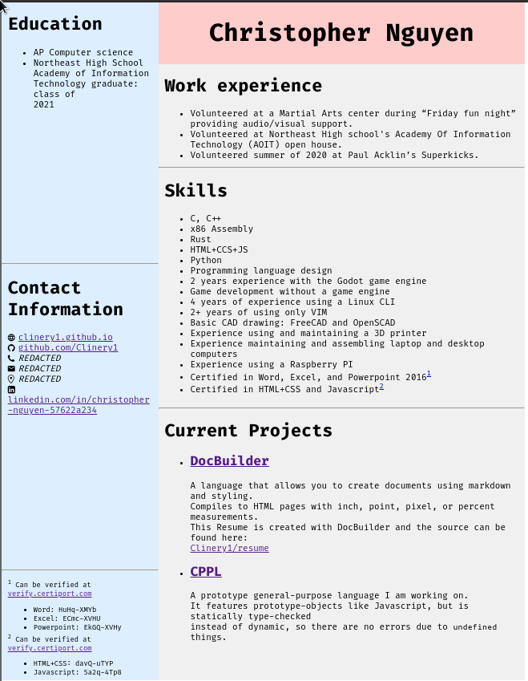

Resume
My Resume is a beautiful 8.5x11" page displayed inside of a website located here. It can be easily printed from the aforementioned website if required. I also used Docbuilder, my document creation tool, so this gives credit to that project since it produced a good looking, valid document.
Docbuilder
Docbuilder is an easy way to build good looking documents. It features a simple layout system of vertical and horizontal sections that can be nested as much as desired. Although Docbuilder is in Alpha, it can still build readable documents. A rewrite for Docbuilder is planned, but has no completion date. Before the rewrite, Docbuilder is very limited. The rewrite will introduce a new s-expression based syntax that feels intuitive and is easy to write instead of the clunky markdown hybrid that the public build currently uses.
Dotfiles
Every Linux user has dotfiles, so why not share them for others to see? Mine are located in Clinery1/dotfiles. My NeoVim, Fish, Sway, Waybar, Fusuma, and Alacritty dotfiles are included.
Fish prompt
Since I spend a lot of time in the shell, why not make it as easy as possible? My fish prompt solves a lot of the problems that a normal prompt has:
- Few/no colors
- No file list
- No time
- Doesn't show the exit status of piped commands
- Doesn't look cool
- Doesn't show info about Git
- Isn't made by me
The source for my prompt is located in Clinery1/fish_prompt. The project was recently refactored, so it is much more readable and easy to extend than before.